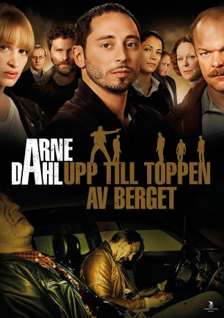

 
 IMDB-Wertung: 6.9 / 10
IMDB-Wertung: 6.9 / 10  Metascore: 0
Metascore: 0 
Group A are called in to investigate a car bomb in Holland but to their horror a policeman and his family were in the car. Further investigation reveal a link between drugs and child porn so can Group A make the required connection before its too late.
Jahr: 2012
Dauer: 88 Minuten
FSK:
Land: Schweden Studio: AXN MysteryTonspuren:
Untertitel:
Auflösung: 1080p (1920x1080) Größe: 6696 MB
Genre: Krimi, TV-Serie
Regisseur: Jörgen Bergmark
Drehbuch: Filmlance International AB
Soundtrack:
Darsteller:
- Malin Arvidsson als Kerstin Holm 2 episodes, 2012
 Claes Ljungmark als Viggo Norlander 2 episodes, 2012
Claes Ljungmark als Viggo Norlander 2 episodes, 2012 Shanti Roney als Paul Hjelm 2 episodes, 2012
Shanti Roney als Paul Hjelm 2 episodes, 2012 Matias Varela als Jorge Chaves 2 episodes, 2012
Matias Varela als Jorge Chaves 2 episodes, 2012- Vera Vitali als Sara Svenhagen 2 episodes, 2012
- Peter Schildt als Bo Ekstrand 2 episodes, 2012
 Frida Hallgren als Cilla Hjelm 2 episodes, 2012
Frida Hallgren als Cilla Hjelm 2 episodes, 2012- Freddy Åsblom als Jovan 2 episodes, 2012
- Aliette Opheim als Lottie 2 episodes, 2012
- Sofia Zouagui als Sonja 2 episodes, 2012
- Susanne Barklund als Mona Ekstrand 2 episodes, 2012
- Horace Cohen als Portier Amsterdam 1 episode, 2012
- Hannah Hoekstra als Servitris Holland 1 episode, 2012
- Magnus Af Sandeberg als Nurse (uncredited) 1 episode, 2012
 Robert Follin als Dennis Shilts (uncredited) 1 episode, 2012
Robert Follin als Dennis Shilts (uncredited) 1 episode, 2012- Irene Lindh als Jenny Hultin 2 episodes, 2012
- Magnus Samuelsson als Gunnar Nyberg 2 episodes, 2012
- Niklas Åkerfelt als Arto Söderstedt 2 episodes, 2012
- Bas Keijzer als van Aerts 2 episodes, 2012
- Pablo Leiva Wenger als Angel 2 episodes, 2012
- Jacob Nordenson als David Billinger 2 episodes, 2012
- Sven Ahlström als Sverker Billinger 2 episodes, 2012
- Carina Jingrot als Daniella 2 episodes, 2012
- Bisse Unger als Danne Hjelm 2 episodes, 2012
- Juda Goslinga als Hoost 2 episodes, 2012
- Mats Blomgren als Dan Mörner 2 episodes, 2012
- Claes Elfsberg als Nyhetsuppläsare 2 episodes, 2012
- Sannamari Patjas als Astrid Olofsson 2 episodes, 2012
- Utas als Taxichaufför 2 episodes, 2012
- Katharina Cohen als Anki Wust 2 episodes, 2012
- Rolf Lydahl als John Alvén 1 episode, 2012
- Merijn de Jong als Far i Holland 1 episode, 2012
- Ebba Ribbing als Tova Hjelm 1 episode, 2012
- Jenny Asterius als Hårfrisörska 1 episode, 2012
- Ulricha Johnson als Susanne Hörnfelt 1 episode, 2012
- Linnea Pettersson als Lena 1 episode, 2012
- Niklas Larsson als Karsten Mollström 1 episode, 2012
- Hanna Svensson als Portier 1 episode, 2012
- César Sarachu als Städaren 1 episode, 2012
- Claes Hartelius als Brynolf Svenhagen 1 episode, 2012
- Lena Carlsson als Gunni Wittorp 1 episode, 2012
- Fikret Cesmeli als Läkare (uncredited) 1 episode, 2012
Datei: X:\Person\Arne Dahl\Arne Dahl 3 - Falsche Opfer (2012, FSK, 1920x1080).mkv seit 10.01.2018
Festplatte: HD Collection-7+mehr(A-Z)+Person
 Alle Filme aus Gruppe 'Person\Arne Dahl'
Alle Filme aus Gruppe 'Person\Arne Dahl'
")